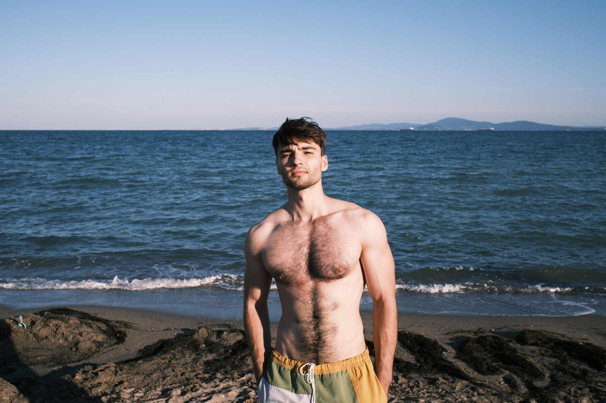
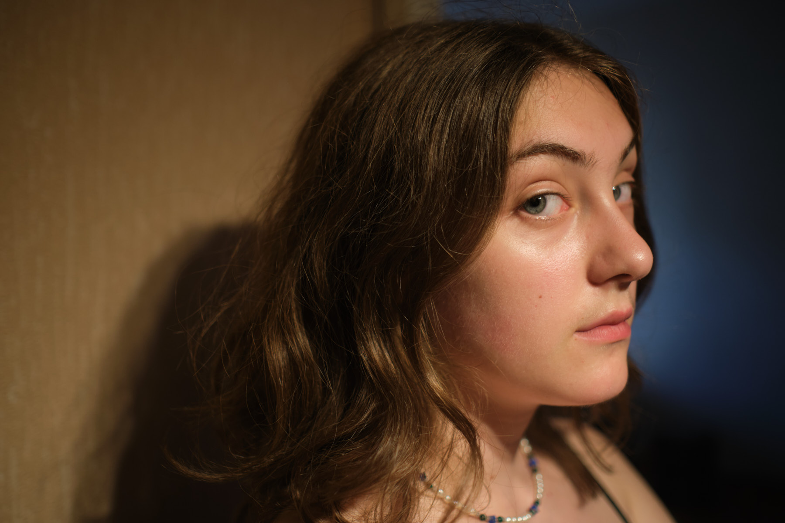

Work / Portrait
Portrait.
Documentary portraits made on the road and in the studio. The frames where someone is closest to themselves.






Work / Portrait
Documentary portraits made on the road and in the studio. The frames where someone is closest to themselves.

